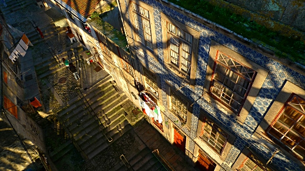
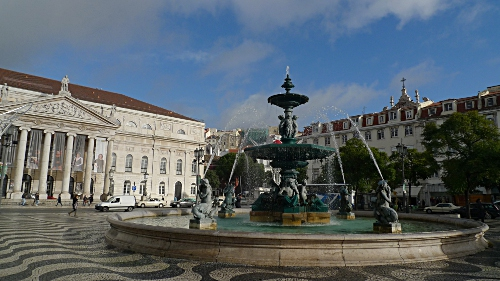
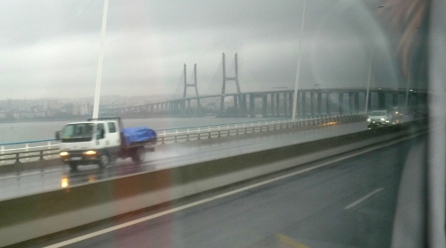
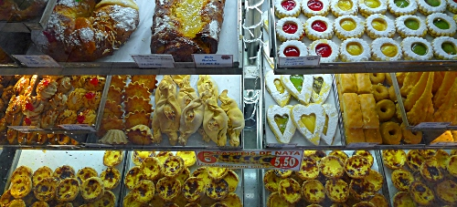
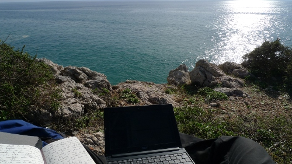
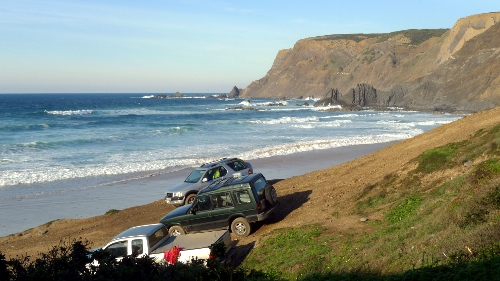

Nice to have a relaxed place to go to at the start of a trip. Today we took a walk with the dogs, ate fruit and relaxed for the rest of the day, the perfect thing for getting used to another summer…
Feb 04
Nice to have a relaxed place to go to at the start of a trip. Today we took a walk with the dogs, ate fruit and relaxed for the rest of the day, the perfect thing for getting used to another summer…
Feb 03
The hunt for an ATM that would accept my bank card took me a bit under 2 hours this morning. Just when I thought about giving up, the cash machine of Banco National started producing the glorious sound that a banknote-counting mechanism makes when counting 70.000 Colones. Mission one was accomplished and breakfast could be bought!.
The bus on the route from Alajuela, where the main international airport of Costa Rica is situated, to San Jose, the capital city, could not be classified as ‘as good as new’: There was no working instrument to be seen on the dashboard (speedometer showed “0” during the whole trip) and the door would open halfway when crashing through the many holes. The one part on the bus that seemed to be in a perfect condition was the horn: it did it’s job beautifully…
Feb 02
En-route to Costa Rica, I had a spare hour in Houston, Texas, and did what you have to do when visiting the USA: eating a hamburger. The one I got was not as tasty as I remembered another Wendy’s hamburger that I had a few years ago (this one was only slightly better than the one from the big M), but after a 12-hour long flight and 1 hour in lines for immigration and security checks, anything will do really. Only 4 more hours to go on the next flight…
Jan 04
It is that time of the year: the time for looking back on the year that has come to an end, and the time for looking forward into the year that is rushing in…
The looking back part is easy:
What went well in 2012?
2012 has been a fantastic year for me. The year started with a new career-step: I said goodbye to my previous job and started in a very interesting new job with TNO, a company that has been on my short-list for a long long time. With the old job, I also said goodbye to having a car at my front door; Over the last few years, I had always had one but used it so little that it felt more and more like a thing I was pouring a lot of money into, but that gave little in return.
From the first of January, my main mode of transportation has been the bicycle. I rode about 12.000 kilometers on my bikes this year and I have only missed the car a couple of times. The only thing that I would consider getting one for is when I need to transport large things during a longer time period. A camper would be a really neat thing to have as well…
After my first trip to awesome Scotland in June, another thing that I had been dreaming of for a long time (actually, since I met an interesting bunch of cyclists in Vilnius, Lithuania in September 2011) became reality: A big tour on my recumbent bicycle that brought me from Ulm in the South of Germany to Istanbul in Turkey. Over the course of 6 weeks, this awesome 3066 kilometer trip took me through Germany, Austria, Slovakia, Hungary, Serbia, Romania, Bulgaria, Greece and Turkey. It was difficult at times, but mostly a very pleasant trip. By travelling slowly, I managed to experience the countries in a more in-depth way than ever before; I’ve seen rural areas and smaller cities in most of the countries I visited and met so many colourful individuals.
The short winter-escape trip to Portugal in December turned out pretty well too: I was walking past palm-trees in a sunny Portugal while snow fell from the sky back home…
What went not so well in 2012?
Paragliding:
Most of the flights that I did get were good, but the total airtime this year has been less than I had hoped for:
– 11 flights
– 5 starting locations
– 4 landing locations
Throb audio:
Because too much time was spent on preparations for trips and actual trips, I only managed to deliver 3 sets of loudspeakers. The 3 sets did come out very good and are certainly something to be proud of. Some prototypes still need some attention…
–
And now the difficult part: Looking forward, the course for 2013:
2013 will be about flying high and far, both on planes and under a para-glider.
February will be largely filled with a winter-escape trip to Costa Rica with a stopover in New York on the way back.
Shortly after the return from Central America, my new para-glider should arrive, a wing with so much more performance than the one I have been flying for the last three years. It will probably take some time to get used to, and that is why the plan is to fly it as often as possible: in the Alps during some weeks in spring and summer and preferably in a place where it is sunny and warm after that…
Dec 09
Dec 08

This city was spared from the 1755 earthquake destruction that flattened most of Lisbon, and therefore still has a fantastic area of narrow alleys and ancient buildings. Beautiful to walk trough, but apparently not very popular amongst the people here: when old people die, the houses are abandoned and nobody wants to take them. The result is that most buildings are empty and in a very bad state of repair. A real shame for such a beautiful area. A bit understandable though, as people washing their clothes in buckets next to the local tap (apparently no water inside the house) is a normal sight in this neighborhood…
The food was both good and bad: The Little French Girl (Francesinha, a very famous local dish from Porto) in the take-away version (the restaurant itself was full with a queue waiting out in the street) came in a plastic bag, the sauce packed separately and not very hot. Without cutlery as well. Eating a meal like this with bare hands turned out to be not so easy, but was managed without spilling the sauce. It was OK-ish, but not more than that…
Dec 07

After a guided free-tour in the morning, I walked to the top of all three hills and the river, covering most of the city. Unfortunately no time for a place like Sintra, which is just a bit further away.
On the bus again tomorrow, as apparently there will be no trains at all then…
Dec 06


Dec 05

Now, what to do with an extra day down here? Since I still had some digitization work left on the travel notes that I wrote during my big cycling trip a few weeks ago, I walked the 5 kilometers to the South-coast, took a path to the top of a cliff and set up the best office I have seen in a long, long time. Only the seat could have been more comfy, but the view of the Atlantic Ocean, the sound of crashing waves below and the sunshine more than made up for that. For sure a very pleasant way to get office-work done. It must be possible to arrange a setting like this more often…
Dec 04
I was at the most South-Eastern point of the European continent about 7 weeks ago and reached that by cycling for 28 days from Ulm. Today, I walked for 6 hours from Raposeira to the most South-Western point of the continent, Cabo de São Vicente. I wonder how much more difficult the Northern edges of the continent might be to reach…
The dark clouds on the horizon (and much closer later) were quite worrying, as there was nowhere to find shelter for bad weather, but they caused no problems: the rain came only in the evening, about 10 minutes after I got home. Brilliant. Now some nice food and rest for the feet. Probably moving Northwards tomorrow.
Dec 03

Right after arrival, after about one more hour on the bus, I could immediately join on a short off-road trip to the coast, as the Goodfeeling-Hostel crew was going for some surfing in the afternoon. A brilliant way to see a beach a little bit more out-of-the-way.
Dec 02
Waking up this morning was magic: Blue skies and such strong sunshine that the sunglasses were absolutely needed. A quick stroll around the center of Faro was enough to decide that this town is not big enough for a day’s walking around.
So, the decision was made to visit some family members who are smart enough to spend two months of the winter in this region instead of the cold Netherlands: Some messages were sent and off I went on the 1 hour and 10 minutes train-ride to Monte Gordo. This turned out to be another reasonably touristy town, but the train-ride was nice, as was the afternoon spent with family under the sunny Portugese sky.
One interesting thing: fishing boats are still used here to make a living for the fishermen. They are dragged out to sea through the sand by a tractor, also a good way to make sure all algae are ‘sanded’ off the bottom…
Nov 20
Oct 14
As soon as the plane was halfway over the Netherlands, the rain welcomed all passengers on board. What a change: from 25 degrees and sunshine to 6 degrees and rain.
The bike has survived the flight without damage and is in need of some serious cleaning and parts replacement now: The cassette is completely done, especially on the lower gears. The extra weight of the luggage, bad roads and hilly route must have given it a hard time over the last six weeks.
For now: this is the end of the Ulm-Istanbul trip, a great trip to look back on. Back to normal life tomorrow morning…
Oct 13
Last week I discovered a bicycle path along the coast to the East. I asked about it at a bicycle shop and they told me that the path continues for 45 kilometers from Kadikoy. This made me decide not to take a shuttle bus to the Sabiha Gocken airport but to take the ferry to Kadikoy and cycle from there on my own power. The path did continue all the way to the start of the motorway to the airport, although at some parts there certainly was a wall or fence and then the only solution was to turn around and find a way to the main road, follow it for a kilometer or two and then find the bicycle path on the coast again. The path was very beautiful for most of the way. Certainly a pleasant way to get out of getting out of Istanbul.
While talking to some other Dutchies at the airport, it turned out that cycling to the airport (which is about 50 kilometers from the city center) was about as fast as a bus-ride in the afternoon: they had been sitting in the traffic jams for two hours…
Oct 12
This was the beautiful view of Aya Sofya from the rooftop bar of awesome Cheers Hostel. The Iskender Kebab we had at at backstreet eatery in Taksim (Bursa Kebab) was the most tasty kebab I have ever tasted: flatbread soaked in tomato sauce and white cream, covered with extremely thin slices of meat, roasted peppers and roasted tomatoes and that sprinkled with hot butter. According to a review it must be the Camaro V8 of kebabs.
Last night tonight and then back home tomorrow…
Oct 11
The island Heybeliada is one of the four Prince’s Islands that is reachable by ferry and the second-largest. The 1.5 hour ferry trip made it clear to me how incredibly big the city of Istanbul really is (it doesn’t feel extremely big from the center): The other side of the water was full of buildings when the ferry left, and still full of buildings as far as the eye can see when we were at the dock at the end of the trip. Of course the 13.5 million people must go somewhere…
The island was beautiful and an excellent place to get some rest after all the traffic and people from the city. These islands are free of cars, and many of the streets are so steep that they made them like stairs.
Oct 09
The ferries are an excellent way to get over to the other side: out of Europe and into Asia in only 20 minutes. Things of course don’t look too different over there, but there surely are less tourists and there is more space. I also succeeded in finding a restaurant where they served real rice-based meals, instead of a kebab dish with some rice on the side. It was so good (and a bit small) that I had two meals 🙂
Oct 08
They have so many delicious and beautiful things over here. This Turkish Delight is just one of the examples from the Spice Bazaar.